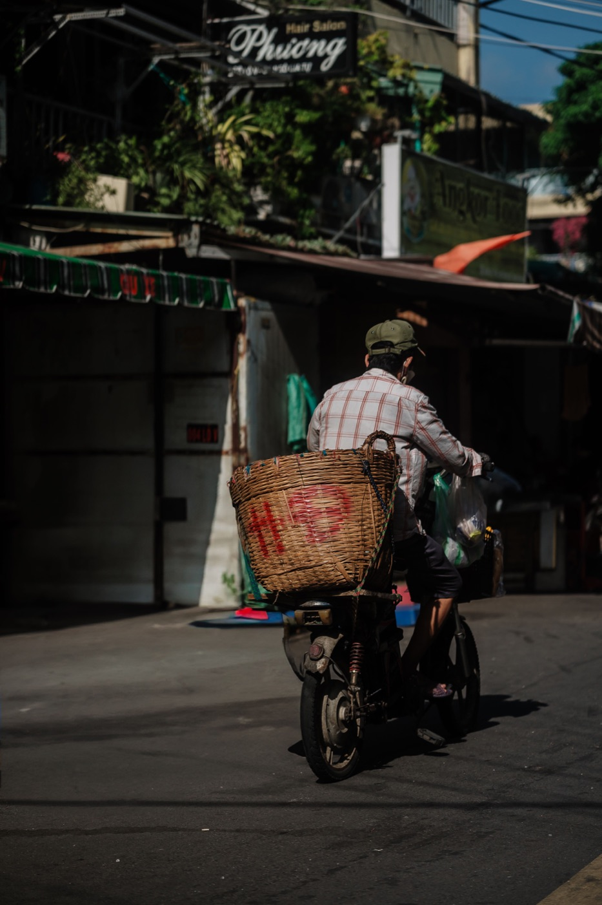

좁은 골목과 시장에서 오토바이 타는 법

골목과 시장 근처에서는 도로 공간이 계속 바뀝니다: 보행자가 노점 뒤에서 나오고, 오토바이가 여유 없이 출발하고, 수레가 길 절반을 막습니다. 여기서 중요한 것은 장애물 사이를 빠져나가는 기술이 아니라 낮은 속도와 완전히 멈출 준비입니다.
속도는 보이는 거리에 맞춘다
보이는 빈 구간 안에서 멈출 수 있는 속도로 달리세요. 건물 모퉁이, 승합차, 주차된 오토바이 줄이 시야를 가리면 미리 스로틀을 푸세요. 잠깐 앞이 비었다고 가속하지 마세요.
오토바이 주변 공간 지키기
주차된 차에 바짝 붙지 마세요: 문이 열리거나 사람이 그 사이로 나올 수 있습니다. 노점, 동물, 아이들과 거리를 두세요. 마주 오는 차와 비켜갈 때는 미리 넓은 곳을 고르고, 동시에 비집고 지나가려 하지 말고 필요하면 멈추세요.

경적 사용법
짧고 차분한 경적은 보이지 않는 모퉁이 앞이나 오토바이를 못 본 사람 옆에서 존재를 알리는 데 도움이 됩니다. 우선권을 주지 않으며 제동을 대신하지 않습니다. 길고 큰 경적은 보행자를 놀라게 해 움직임을 더 예측하기 어렵게 만듭니다.
저속에서 스로틀과 브레이크
손목에 힘을 빼고, 앞바퀴보다 멀리 보고, 부드럽게 조작하세요. 핸들을 꺾은 채 스로틀을 급하게 감지 마세요. 손가락 한두 개는 브레이크에 대기해도 되지만 계속 쥐고 있지는 마세요. 아주 좁은 구간 전에는 멈춰서 폭을 가늠하는 것이 낫습니다.
시장 앞 주차
공식 주차장, 주차 요원, 관리되는 게 분명한 줄을 찾으세요. 입구, 통로, 경사로, 다른 오토바이의 출구를 막지 마세요. 구역을 기억하거나 사진을 찍으세요: 직원들이 오토바이를 더 촘촘히 옮기는 경우가 많습니다. 귀중품과 서류를 시트 아래 두지 마세요.
특히 위험한 것
- 젖은 타일, 생선, 채소 쓰레기, 모래;
- 도로로 튀어나온 파라솔, 차양, 물건;
- 시야 확보 없이 후진해 나오는 오토바이;
- 줄 사이의 아이들과 동물;
- 마주 오는 차를 볼 수 없는 좁은 통로로의 회전.
너무 좁아졌다면
안전한 곳에 멈추고 시동을 끄고 그 구간은 끌고 걸어가세요. 내비게이션이 형식상 존재하지만 달리기 불편한 골목으로 안내할 때가 있습니다. 오토바이를 망가뜨리거나 사람을 칠 위험보다 돌아서 다른 길로 가는 것이 낫습니다.
짧은 결론
좁은 골목에는 낮은 속도, 넓은 시야, 양보할 준비가 필요합니다. 모든 틈을 두고 경쟁하지 마세요. 냐짱 주차와 미러 조정 가이드도 읽어보세요.